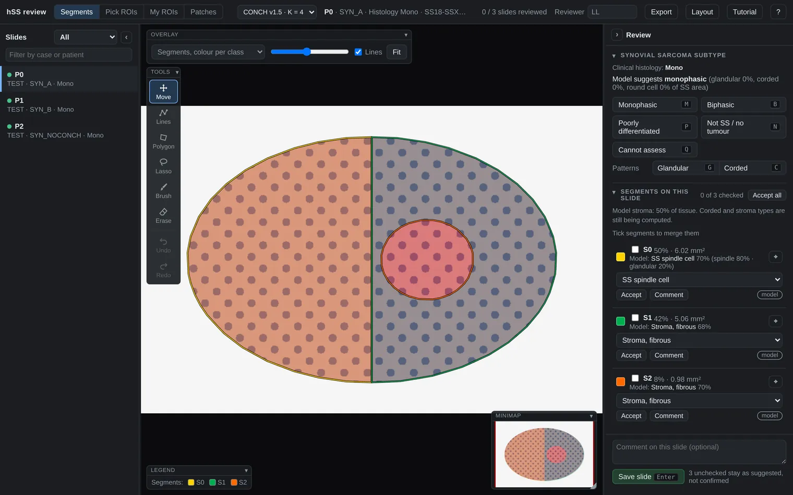
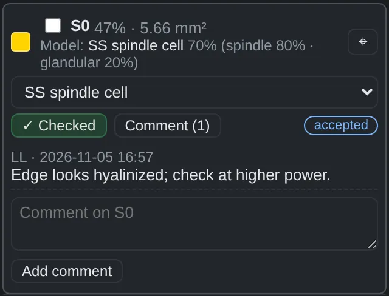
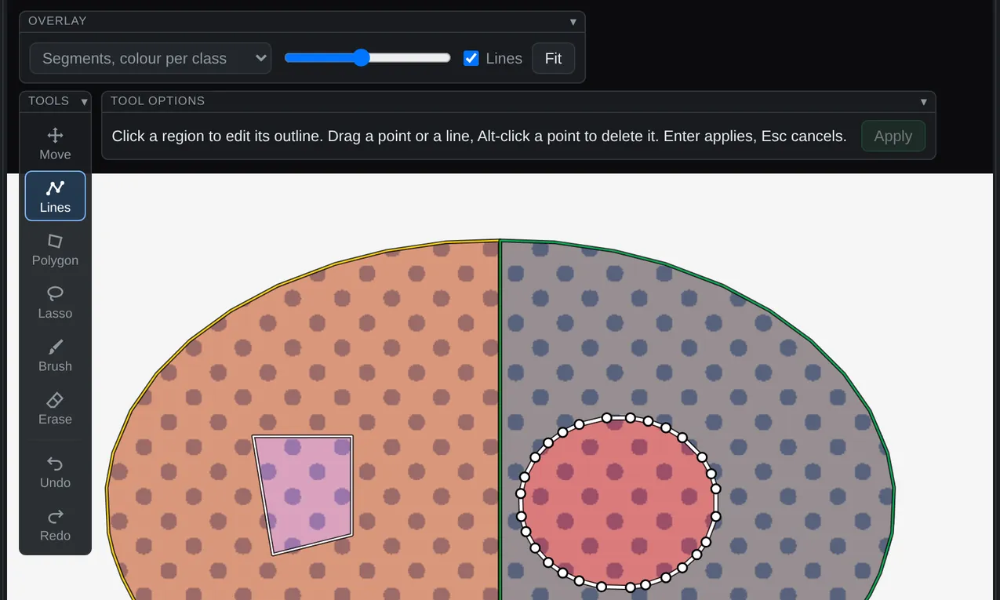
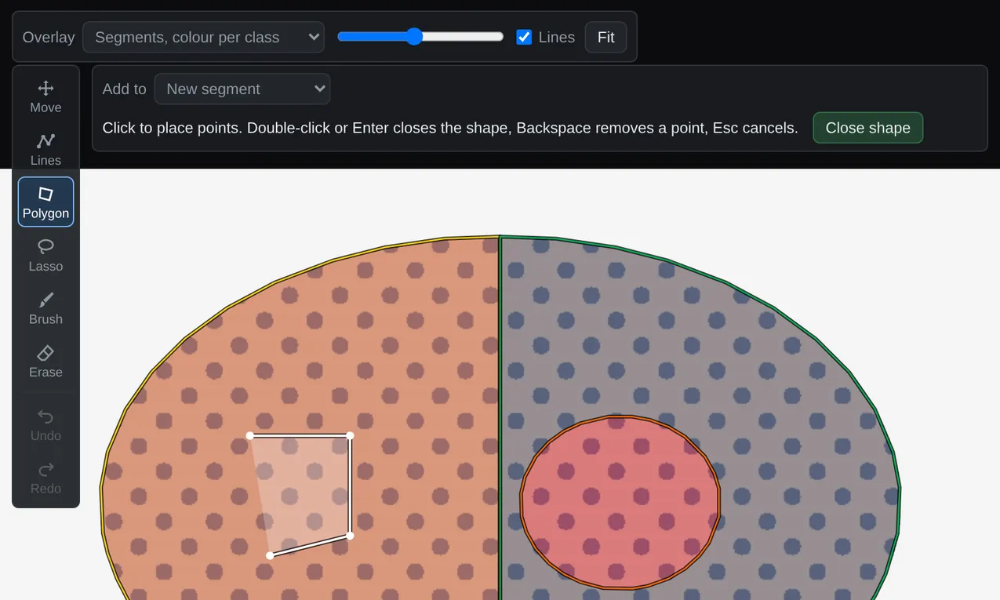
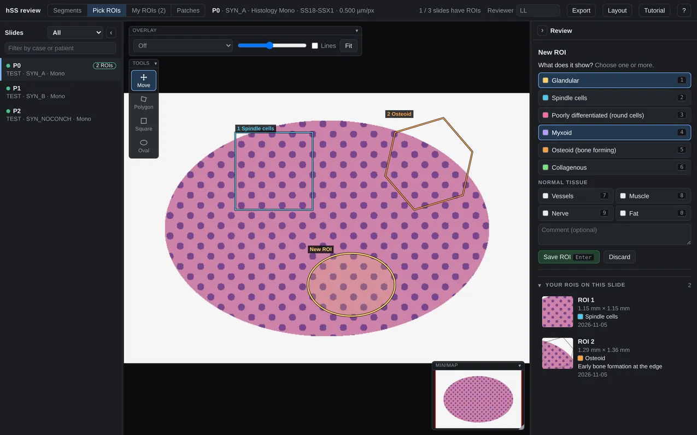
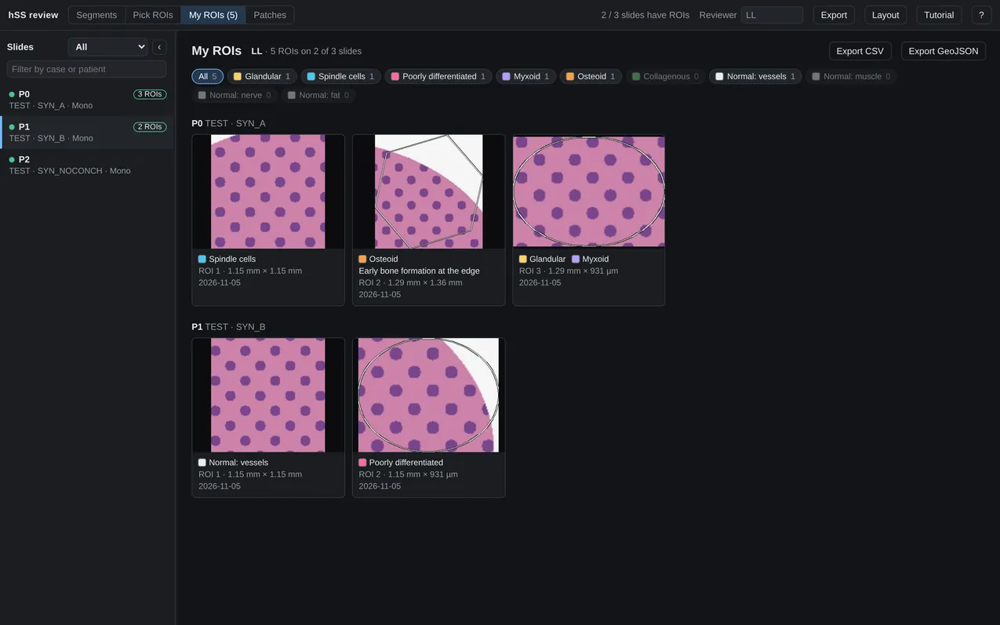
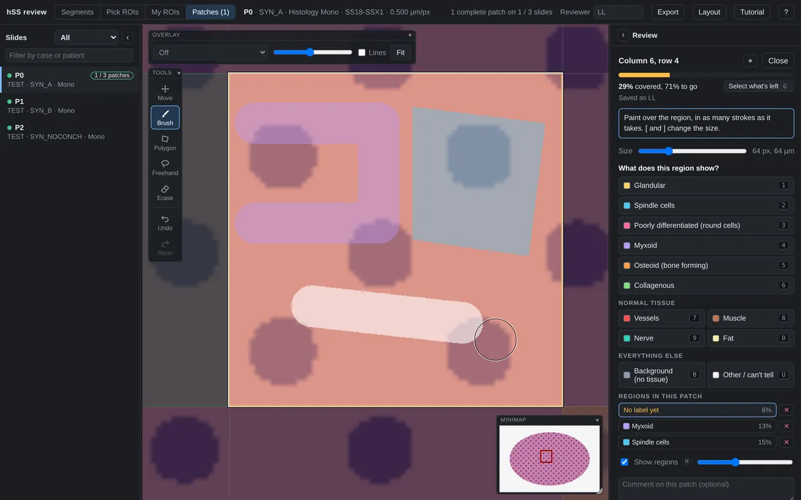
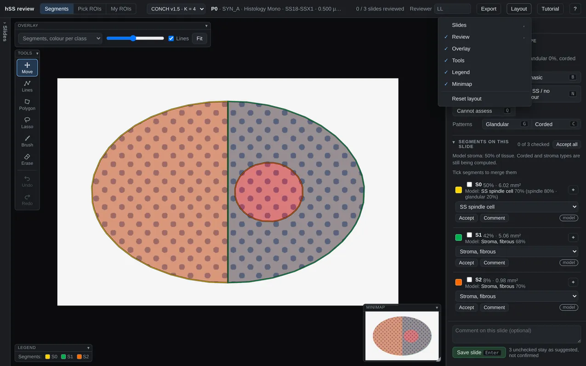

Reviewing a slide
The model divides each slide into segments and suggests a tissue label for each one, plus a subtype for the slide. You check those suggestions, correct what is wrong and save.
To mark your own regions instead, see Pick ROIs. To annotate square patches for model training, see Annotate patches. The tabs at the top switch between them.
The screenshots use an artificial test slide, so the tissue looks nothing like H&E.
The screen

- Slides. Filter by status, or search by case or patient.
- Reviewer. Your initials. This browser remembers them.
- Overlay. What the colours show, how strong they are, and whether outlines are drawn.
- Toolbox. Tools for changing the segmentation.
- Subtype. The model's suggestion and your call for the slide.
- Segments. Each segment's size, model label, your label and comments, largest first.
- Save slide. Records your subtype and the labels you checked.
- Layout. Shows or hides any panel and resets the arrangement. See Arrange the panels.
- Tabs. Segments is the review described here. Pick ROIs and My ROIs are for your own regions.
Review a slide
-
Enter your initials
Every save, edit and comment is recorded under them. Type them in the box at the top and press Enter. Shortcuts are letters, so until you leave the box they would become part of your initials. The box also lets go by itself after two seconds, and the message after each save shows the name it was saved under.
-
Open a slide
The first unreviewed slide opens by itself. Otherwise choose one from the list, or press ↓ ↑.
-
Look over the overlay
The Overlay menu switches between colour per segment, the labels on this slide and the model's predicted labels. H cycles through them and turns the overlay off, so you can see the tissue.
To look at one segment alone, click its colour swatch in the list or press its number, 1 for the largest. Do the same again to bring the others back.
-
Check each segment
Press J for the next segment and K for the previous one. The viewer zooms to the segment's largest piece. You can also click a region on the slide, which selects it without zooming.
- The label is right: press A. It is marked as checked and the next unchecked segment opens. If nothing is selected yet, the first A only selects a segment.
- The label is wrong: choose another in the segment's menu. That also marks it as checked.
- Every remaining label is right: Accept all checks them together.
-
Comment where it helps
Press T or the segment's Comment button, type, then click Add comment. Press Esc to leave the box, because shortcuts don't work while you are typing.

-
Correct the outlines if needed
See Fix the segmentation. Your labels carry over while you edit.
-
Choose the subtype
Press M monophasic, B biphasic, P poorly differentiated, N not SS or Q cannot assess. G and C mark glandular and corded patterns. A slide can't be saved without a subtype.
-
Save
Press Enter or Save slide, and the next unreviewed slide opens. Add a slide comment first if you have one.
Only checked segments are confirmed. Unchecked ones stay as model suggestions, and the note beside the button says how many.
Fix the segmentation
Pick a tool from the toolbox on the slide. A hint beside it explains the current tool, and you stay in that tool until you choose another.
| To do this | Use | Key |
|---|---|---|
| Pan, zoom and select regions | Move | V |
| Move a boundary | Lines | E |
| Outline a region point by point | Polygon | D |
| Outline a region freehand | Lasso | L |
| Paint a region, or extend one | Brush | R |
| Remove an area from the segmentation | Erase | X |
In any tool, scroll to zoom and hold Space while dragging to pan. Esc cancels what you are drawing. Press it again to return to Move.
Move a boundary

- Press E and click the region. Points appear along its outline.
- Drag a point to move it. Press on a line between points to add a point there and drag it.
- To delete a point, hold Alt and click it, or hover over it and press Backspace.
- Press Enter or Apply. Esc cancels instead.
Neighbours move with the line, so no gap or overlap appears. Area you pull in is taken from whatever was there. Area you give up goes to the nearest other segment, or becomes background if there is none close by.
Add a region

- Choose Polygon, Lasso or Brush.
- In Add to, choose New segment or an existing segment.
- Draw:
- Polygon: click to place points. To finish, double-click, click the first point again or press Enter. Backspace removes the last point.
- Lasso: drag around the region and release.
- Brush: drag to paint. [ and ] change the size.
- If you made a new segment, set its label in the list and check it. New segments are named N1, N2 and so on.
A new shape takes over whatever it covers, including parts of other segments.
Remove an area
Press X and drag across it. The area becomes background and no longer counts toward segment areas or the subtype. Use this for areas that aren't tissue, such as background the model included.
Merge segments
Tick two or more segments in the list, then choose where the merge applies:
- On this slide changes this slide only.
- On all slides changes every slide in the current run. Segments you added exist on one slide only, so they can't be merged this way.
To reverse a merge, click unmerge on the merged segment.
Undo
Z undoes the last edit and Shift+Z redoes it. Segmentation edits in force, at the bottom of the right panel, lists what currently applies.
Undo works per slide, not per person, so it can undo a colleague's last edit on that slide. It doesn't reverse merges.
Pick ROIs
Use the Pick ROIs tab to mark areas of a slide and say what they show. A ROI belongs to the slide, not to the model's segmentation, so the slide is shown plain and the run menu is put away. The Overlay panel can still bring the colours back.
You work in your own workspace. Your initials open it, and you see only the ROIs picked under them, so each expert annotates independently. Use the same initials each time; capitals don't matter.

-
Find the area
Enter your initials and choose a slide on the left. Scroll to zoom and drag to pan. The slide list shows how many ROIs you have on each slide, and its filter can show only the slides where you have none yet.
-
Draw around it
Tool How to draw Polygon D Click around the area, one point at a time. To close it, double-click, press Enter or click the first point. Backspace removes the last point. Square S Drag from corner to corner. Hold Shift for a rectangle. Oval O Drag across the area. Hold Shift for a circle. Scroll still zooms while you draw, and holding Space lets you drag to pan, so a polygon can follow a long border. Esc cancels.
-
Say what it shows
The options appear in the review panel. Click one or press its number. Choose several if the area shows more than one, and choose one again to remove it.
-
Save
Add a comment if it helps, then press Save ROI or Enter. The slide goes back to Move, so your next drag pans. To cancel a new ROI, press Esc or Discard.
See your ROIs

The My ROIs tab shows your ROIs on every slide, grouped by slide. Use the buttons at the top to show one label. Click a card to open that ROI on its slide, or click a slide on the left to work on it.
On the Pick ROIs tab, the same ROIs appear on the slide and in the list in the review panel.
Change or delete a ROI
Click a ROI on the slide or in the list. Change its labels or comment and press Save changes. Close leaves it as it was.
Delete removes it, and an Undo button stays in the panel until you move on. To change an outline, delete the ROI and draw it again.
Annotate patches
Use the Patches tab to annotate slides for model training. A grid of square patches lies over the slide, each 512 × 512 pixels at 20×, or 259 µm across. You choose which patches to annotate, and each one is annotated in full: every pixel of a patch should end up in a region. Regions may overlap.
As with ROIs, you work in your own workspace, opened by your initials.

-
Pick a patch
Zoom in until the grid shows. On a large slide it only appears once you are close, so clicking the bare slide takes you there. Then click a patch. It moves to the clear part of the screen, the rest of the slide dims, and the brush is ready.
-
Draw a region
Tool How to draw Brush R Paint over the region, in as many strokes as it takes. Change the diameter with − and + under the tools, the slider in the panel, or [ and ]. Wand W Click in a region with the tip of the wand: it spreads through similar colour nearby. Drag to take in more of the colour you first clicked. Zoom out to select more at once, in for detail. Change the sensitivity with − and + under the tools, or [ and ]. Alt+drag removes. Works best where the region clearly differs from what surrounds it; where it doesn't, use the brush. Polygon D Click around the region. To close it, double-click, press Enter or click the first point. Freehand L Drag around the region. Releasing closes the shape. You can draw past the edge of the patch, which is the easy way to reach the edge exactly. Only what is inside the patch is kept. Scroll still zooms, and holding Space lets you drag to pan.
-
Say what it shows
Click a label or press its key. Your next stroke starts a new region, and regions with the same label join into one. If a region shows two things, hold Shift as you choose the second label: the region turns striped. Z undoes a wrong label.
-
Cover the rest
If no label fits, press Type your own… T, type the class and press Enter. It works like any other label and stays on your list under Your own classes for as long as one of your patches uses it. Use the same wording each time, so the class stays one class in the training data.
The bar in the review panel shows how much is covered. When only one kind of tissue is left, or only glass, just click its label: everything not yet annotated gets it. If the whole patch is one type, press Select whole patch G first, then choose the label. Background is for glass, and Other / can't tell is for anything else that isn't on the list.
Finish a patch
A patch is complete when every pixel is in a region. The server works this out from the masks themselves. On the grid, complete patches are green and partial ones are amber.
Press Enter on a complete patch to go to the next one, or use the arrow keys to go in any direction. You can leave a patch unfinished and come back; it stays amber, and it stays out of the training masks until it is complete. The list in the review panel shows your patches on this slide, and the slide list shows how many are complete on each slide.
Change a region
- Undo: Z undoes the last change in this patch, and Shift+Z brings it back.
- Erase X removes every region under the brush.
- One region only: click it in the list. Now labels are added to it or removed from it, the brush adds to it, and Erase takes from it alone. Press Esc when you are done.
- Delete: use the ✕ next to it in the list.
- To see the tissue underneath: press H to hide the regions, or use the slider below the list.
Arrange the panels

| To do this | Do this |
|---|---|
| Resize the slide list or review panel | Drag the line between it and the slide. Double-click the line to reset the width. |
| Fold the slide list or review panel | Click ‹ or › at the top of the panel, or press , for slides and . for review. Click the narrow rail left behind to bring it back. |
| Move a panel on the slide | Drag its title bar. Double-click the title bar to put it back. |
| Fold a panel on the slide | Click ▾ in its title bar. Shortcuts for a folded panel keep working. |
| Resize the minimap | Drag its bottom right corner. |
| Fold a section of the review panel | Click its heading. A folded section still shows your subtype or the number of segments checked. |
| Start again | Choose Layout at the top, then Reset layout. |
Your arrangement is remembered in this browser only. In a narrow window, or with the browser zoomed far in, only the panel you opened last stays open and the other folds to its rail. You can still switch between them.
What is saved when
| Saved at once | Saved by Save slide |
|---|---|
| Drawing, line and erase edits | Subtype and patterns |
| Merges and unmerges | Labels of checked segments |
| Segment comments, once you click Add comment | Slide comment |
Nothing is overwritten. Every action is logged with reviewer and time, a later save replaces an earlier one as the current answer, and the model's original segmentation is kept.
ROIs have their own Save ROI button, and the same rule applies: each change is a new record, and a deleted ROI is only marked as deleted.
Patches save themselves after each change. Each save is a new record holding the whole patch, so earlier versions are kept too.
Label tags
The tag at the right of each segment row shows where its label stands.
| Tag | Meaning |
|---|---|
| model | The model's suggestion, not yet checked |
| from class | A label set earlier for this class across slides, not yet checked here |
| accepted | Checked as shown, not yet saved |
| changed | You chose a different label, not yet saved |
| Saved for this slide |
Export
The Export menu at the top right asks whose work you want: Individual review, for the initials you have entered, or All reviews. Then choose what to download:
- Complete patches (ZIP): for each fully annotated patch, one black and white 512 × 512 PNG per label, plus a table with the slide and position of each patch, its labels and comment. Regions may overlap, so one pixel can be set in several masks.
- Operation log (CSV): every step in the order it happened, one row each. Each row gives the patch's pick order, the step's annotation order in that patch, and the stay time on the patch, both for that stay and in total, by the clock and as active time.
All reviews shows you other people's work, so leave it until your own is finished. Your ROIs have their own export buttons on the My ROIs tab.
Good to know
- Model labels on drawn shapes are rough. They come from scores on 512 px patches, so check small shapes by eye.
- Lines edits outer outlines only. To change a hole inside a segment, use Brush or Erase. Very small pieces have no outline, so they can't be clicked; Brush and Erase still work on them.
- Very complex outlines can take a second or so to apply. The hint shows “Saving…” until they finish.
- The run menu at the top left affects everyone. Switching it changes the run for all open sessions, and stays that way until someone switches again. Labels are stored per run, so check with colleagues first.
- A workspace is tied to initials, not a password. Two people using the same initials share a workspace, and anyone who types your initials opens yours. Agree on initials with your colleagues.
Keyboard shortcuts
Press ? in the app to see these at any time.
| Review | |
|---|---|
| J K | Next / previous segment |
| A | Accept label, go to the next |
| T | Comment on the selected segment |
| M B P N Q | Subtype |
| G C | Glandular / corded pattern |
| 1…9 | Show only that segment |
| Enter | Save, next unreviewed slide |
| ↓ ↑ | Next / previous slide |
| H | Cycle overlay |
| F | Whole slide |
| Segmentation tools | |
|---|---|
| V | Move |
| E | Lines |
| D | Polygon |
| L | Lasso |
| R | Brush |
| X | Erase |
| [ ] | Brush or eraser size |
| Z | Undo |
| Shift+Z | Redo |
| Space + drag | Pan while drawing |
| Esc | Cancel, then back to Move |
| , . | Fold the slide list / review panel |
| Pick ROIs tab | |
|---|---|
| D S O | Polygon / Square / Oval |
| V | Move |
| Backspace | Remove the last polygon point |
| 1…9 0 E | Choose a label: each shows its key on the list |
| Enter | Close the polygon, or save the ROI |
| Esc | Cancel, one step back |
| ↓ ↑ F H | Next / previous slide, whole slide, overlay |
| Patches tab | |
|---|---|
| R W D L | Brush / Wand / Polygon / Freehand |
| X V | Erase / Move |
| [ ] | Brush or eraser diameter |
| 1…9 0 E B U | Choose a label, each shows its key on the list: for the region, or for all that's left |
| T | Type your own class |
| Shift + label | Second label on the last region |
| G | Select what's left in the patch |
| ← → ↑ ↓ | Go to the next patch |
| Enter | Close the polygon, finish the region, or go on from a complete patch |
| H | Hide or show the regions |
| Z Shift+Z | Undo / Redo in this patch |
| Esc | One step back |